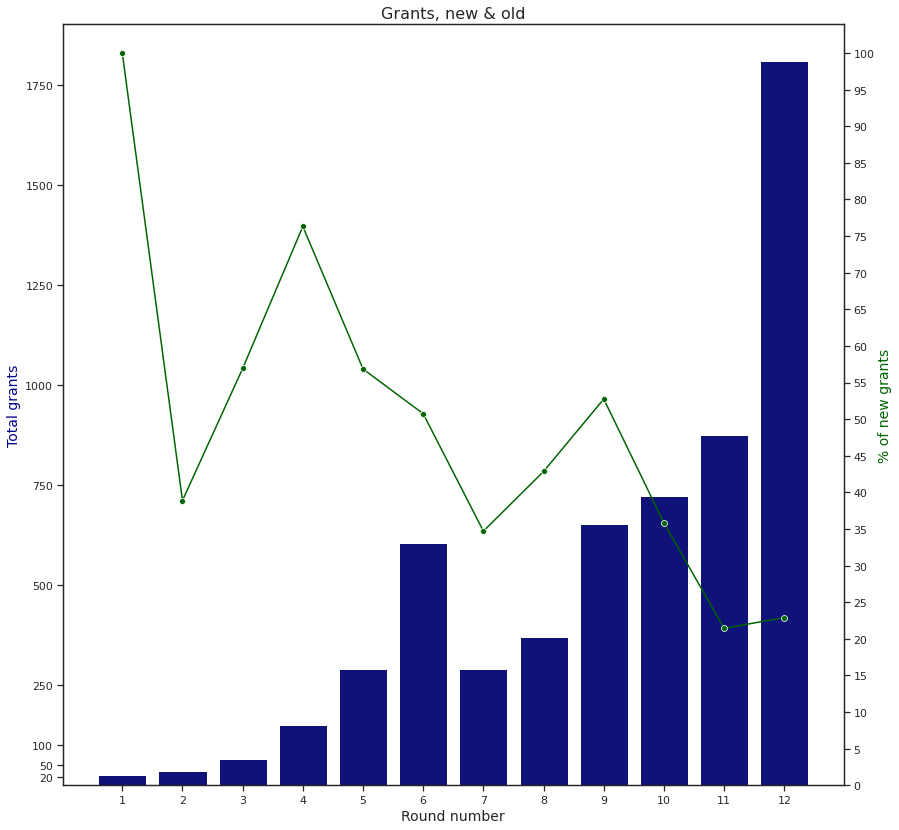
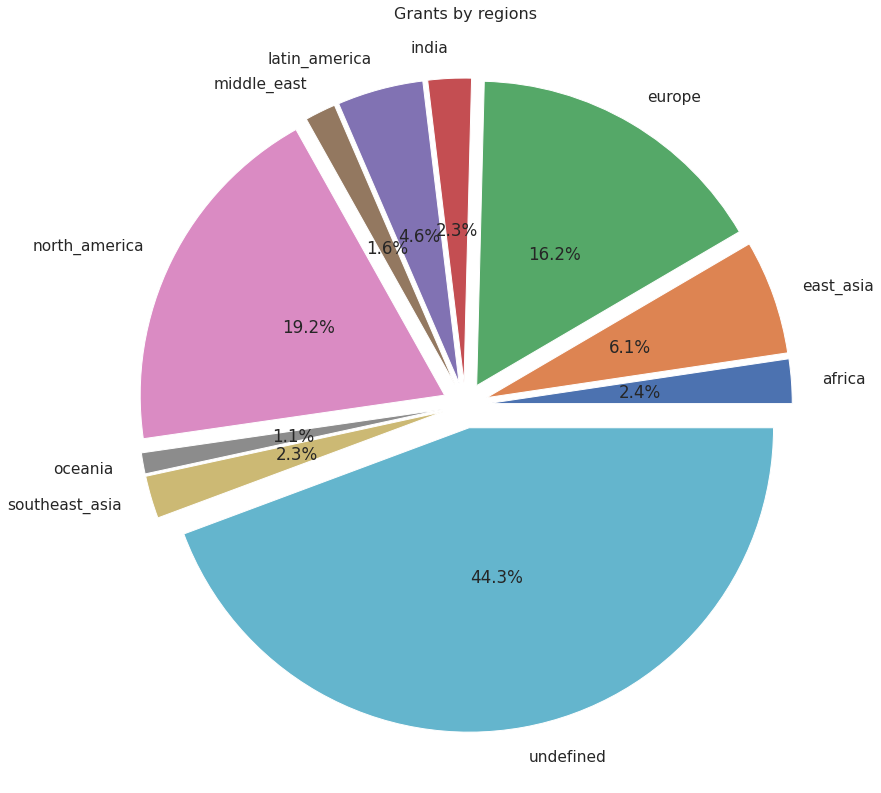
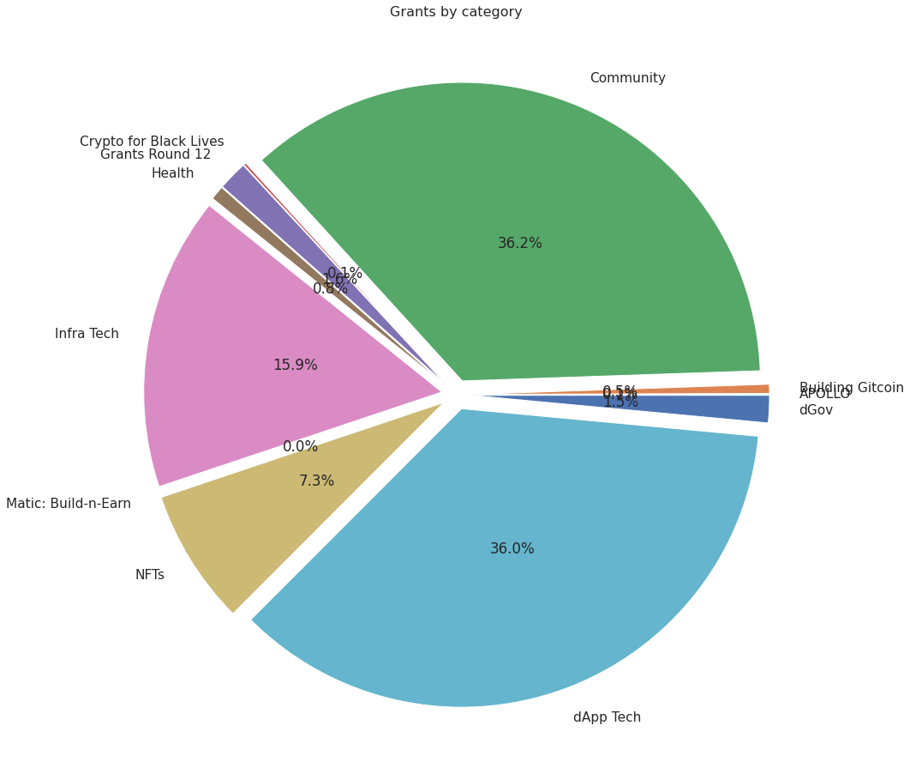
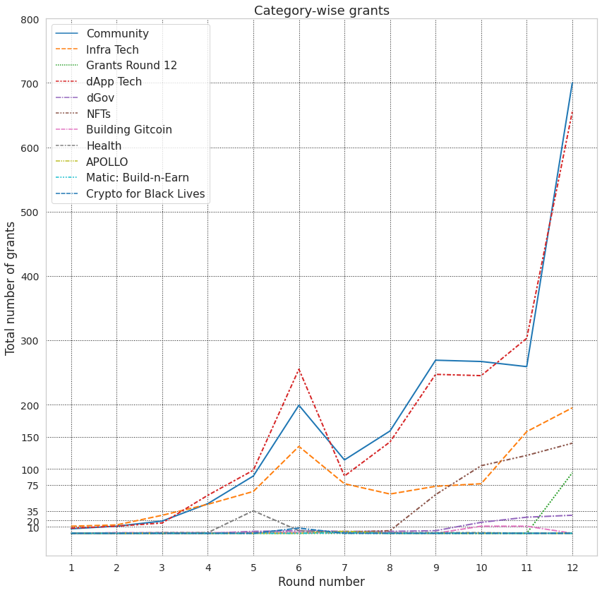

This report aims to show some trends within Gitcoin grants' rounds 1-12.
Let's begin with some global stats:
As can bee seen in the following figure, the next round's % of new to total grants should hover around 20-30%. Rounds 9 trough 11 could be regarded as some sort of new grants' winter where the % of new grants has fallen sharply by almost 50%.

Round 8 saw the biggest increase in crowdfunds, almost ~7x! then things started to slow down across the next three rounds. It was round 12 where grants enjoyed a good 2x increase in crowdfunds compared the the previous round.
Round 12 is specially interesting in that every $1 of crowdfunds is matched with $1 in the matching pool on average.

Round 8 seems to be the bull market of gitcoin grants where total contributions spiked by ~4-5x followd by more than ~50% increase every next round! Expecting a 30% increase in total contributions in the next round(13) should not be ruled out.
Another subtle point to pay attention to is how on average every unique contribution seems to result in ~ $15 of raised funds, at least what appears to be the case in the last 4 rounds. Please note that this measure is a bit controversial and needs furthur research to clarify things.
undefined refers to those grants whose founders have decided to not disclose their location.
Community and dApp Tech are close rivals here! Cautios here as some grants could be housed within both categories.
As Gitcoin ages, it seems that more people are introduced to it. Here we can see that all regions are showing organic growth.

This is an interesting chart! People have given up building Gitcoin, either tracks have been updated(=> dGov) or there are not much to build on Gitcoin anymore?! DAOs seem to be gaining momentum starting with round 9 and NFTs show rise and fall similar to the market cap fluctuations. Oh, why Crypto for Black Lives died btw?
Assuming it takes $5 worth of energy to create a grant on Gitcoin, the following figure demonstrates what % of grants failed raise a minimum of $5 :)
Rounds 2 and 3 had the most lucky grants, almost all received some pie from the cake while round 12 saw the biggest massacre in raised funds. Round 8 is interesting in that both the total raised funds is high(~2.5m) and also less than 5% of the grants were deprived of $.